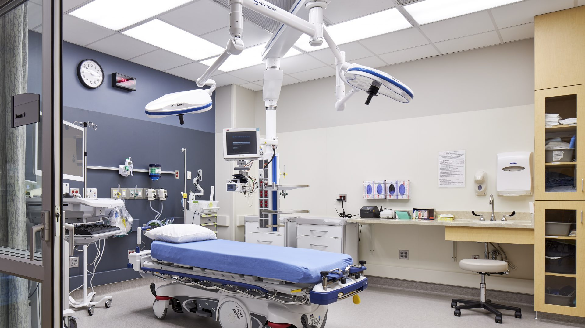

Outpatient Clinics: Nephrology hospitals have dedicated outpatient clinics where patients can receive consultations, screenings, and follow-up care. Nephrologists, specialized doctors in kidney diseases, diagnose and manage various kidney-related conditions in these clinics.
Dialysis Centers: Many nephrology hospitals have advanced dialysis centers equipped with state-of-the-art hemodialysis and peritoneal dialysis machines. These facilities provide dialysis treatment for patients with end-stage renal disease (ESRD) or those requiring temporary renal replacement therapy.
Transplant Services: Nephrology hospitals often have kidney transplant programs that offer evaluation, pre-transplant workup, donor matching, and post-transplant care. These services are vital for patients with advanced kidney disease who may require a kidney transplant as a treatment option.
Laboratory and Imaging Services: Nephrology hospitals have in-house laboratories that perform a wide range of tests specific to kidney function, such as blood tests to assess kidney function, electrolyte levels, and urine analysis. They may also have imaging services like ultrasound, CT scan, or MRI for diagnosing kidney conditions.
Renal Biopsy: Many nephrology hospitals have the capability to perform renal biopsies, which involve the removal of a small sample of kidney tissue for diagnostic purposes. This procedure helps in identifying the cause and severity of kidney diseases.
Nutrition and Dietary Support: Kidney patients often require specialized diets to manage their condition. Nephrology hospitals typically have dieticians or nutritionists who provide dietary counseling and education to help patients maintain optimal nutrition while managing their kidney disease.
Supportive Services: Nephrology hospitals may have additional support services such as social workers, psychologists, and support groups to assist patients and their families in coping with the emotional and practical aspects of kidney disease.
Research and Clinical Trials: Some nephrology hospitals actively engage in research and clinical trials to advance the understanding and treatment of kidney diseases. These hospitals may offer opportunities for patients to participate in studies or trials that explore new treatment options or therapies.
